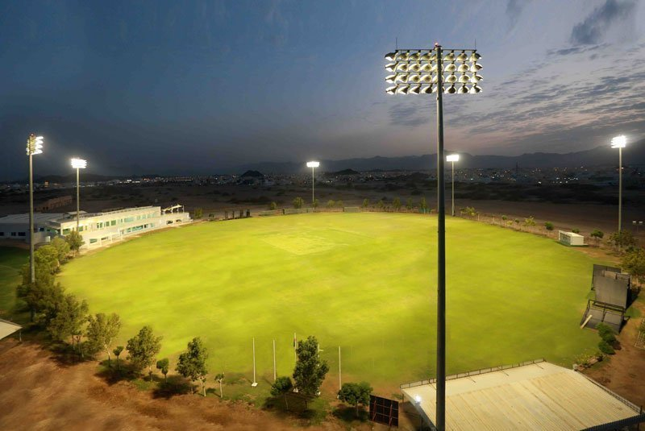
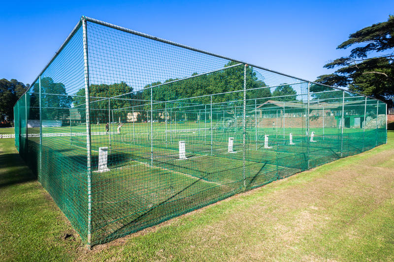
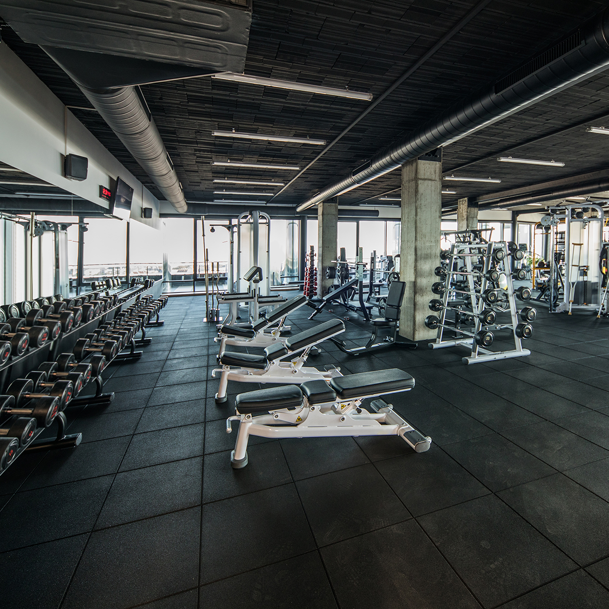
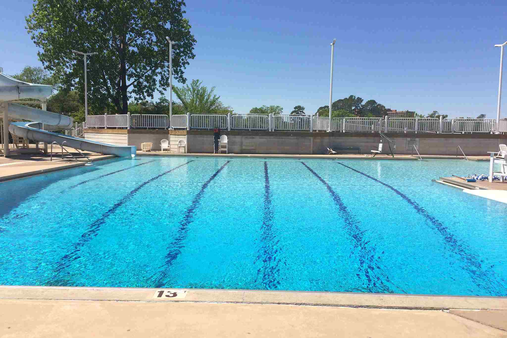
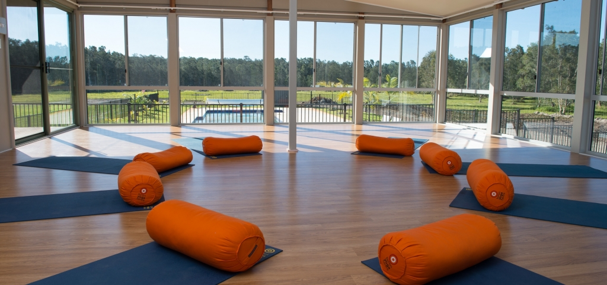

A cricket field is a large grassy field on which the game of cricket is played. Although generally oval in shape, there is a wide variety within this: some are almost perfect circles, some elongated ovals and some entirely irregular shapes with little or no symmetry – but they will have entirely curved boundaries, almost without exception. There are no fixed dimensions for the field but its diameter usually varies between 450 feet (137 m) and 500 feet (150 m). Cricket is unusual among major sports (along with golf, Australian rules football and baseball) in that there is no official rule for a fixed-shape ground for professional games. On most grounds, a rope demarcates the perimeter of the field and is known as the boundary. Within the boundary and generally as close to the centre as possible will be the square which is an area of carefully prepared grass upon which cricket pitches can be prepared and marked for the matches. |
 |
Cricket nets are used by batsmen and bowlers to practice their cricketing techniques. They consist of a cricket pitch (natural or artificial) enclosed by netting on either side, behind, and optionally above. The bowling end is left open. Nets stop the cricket ball travelling across the field when the batsman plays a shot. They save practice time and eliminate the need for fielders or a wicket-keeper. They allow more people to train at once, particularly when they have several lanes. They allow solitary batting practice when used with a bowling machine. |
 |
MRF International, Inc. is an American chain of international co-ed fitness centers (commonly referred to as gyms) . Each gym offers a variety of cardio and strength training equipment as well as group exercise programs. Its headquarters have since relocated to Dallas. |
 |
A swimming pool, swimming bath, wading pool, paddling pool, or simply pool is a structure designed to hold water to enable swimming or other leisure activities. Pools can be built into the ground (in-ground pools) or built above ground (as a freestanding construction or as part of a building or other larger structure), and are also a common feature aboard ocean-liners and cruise ships. In-ground pools are most commonly constructed from materials such as concrete, natural stone, metal, plastic, or fiberglass, and can be of a custom size and shape or built to a standardized size, the largest of which is the Olympic-size swimming pool. |
 |
Yoga is a group of physical, mental, and spiritual practices or disciplines which originated in ancient India. Yoga is one of the six Āstika (orthodox) schools of Hindu philosophical traditions. |
 |